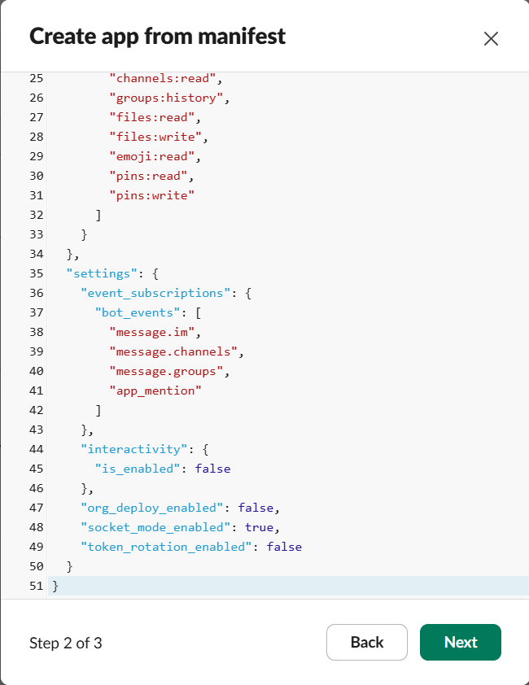
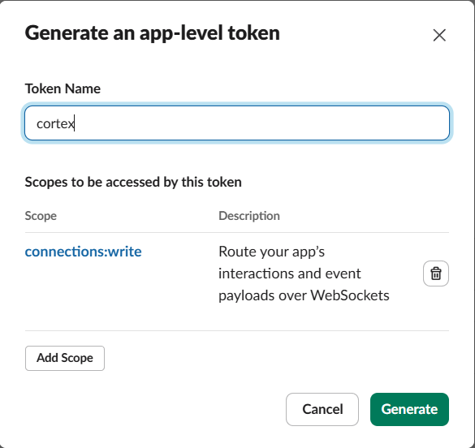
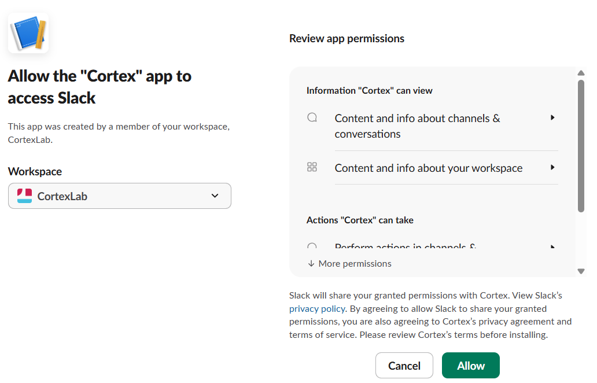
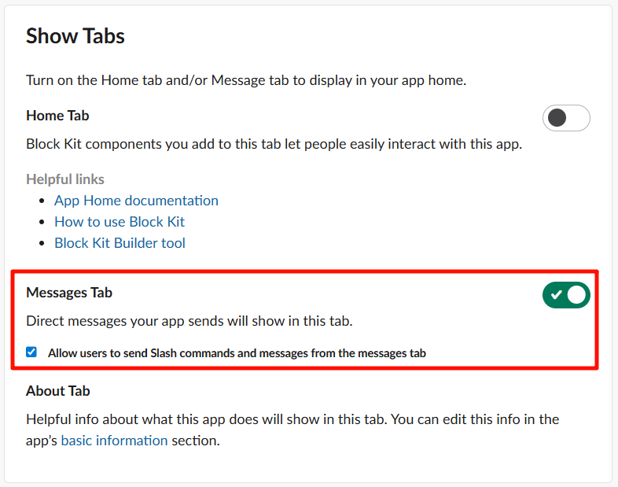
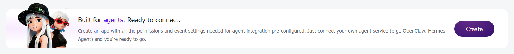
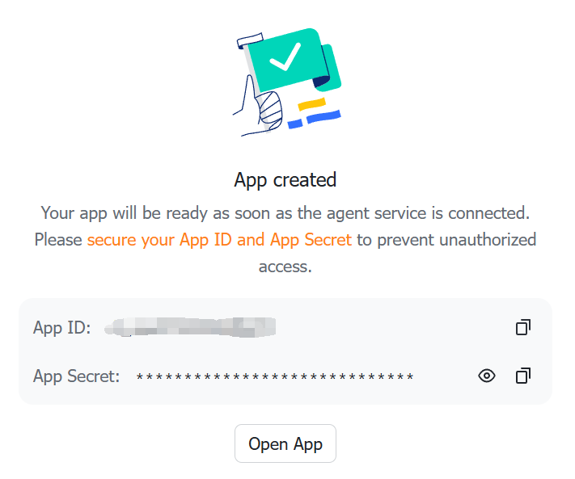

Quickstart¶
From zero to a Cortex agent answering you in chat in about 5 minutes,
most of which is waiting for npm and clicking through your chat
platform's app creation page.
Cortex talks to you through Slack or Feishu (飞书/Lark) — pick either, or
run both at once. cortex init does almost everything. You will not edit
a single config file by hand. This guide tells you what to expect at each
prompt and shows you exactly where to click.
Prerequisites¶
- Node.js ≥ 20 (Cortex itself targets 20+; the bundled coding-agent backends prefer 22).
- A Slack workspace or a Feishu (Lark) organization where you can create an app.
- About 2 GB of free disk for backends, plugins, and logs.
You do not need to install claude (Claude Code) or pi
(pi-coding-agent) beforehand. You do not need to install git
beforehand. You do not need to pre-create any directories or env files.
cortex init installs all of these for you.
Checking your Node.js version¶
Open a terminal and run:
You should see something like v22.14.0. If the version is below 20,
or if you see command not found: node, install or upgrade Node.js
using one of the methods below.
Installing Node.js¶
macOS (Homebrew):
Linux (nvm, recommended):
curl -o- https://raw.githubusercontent.com/nvm-sh/nvm/v0.40.3/install.sh | bash
# Restart your shell, then:
nvm install 22
nvm use 22
Linux (apt, Ubuntu/Debian 24.04+):
Windows:
Download the LTS installer from nodejs.org
(choose the "LTS" version, 22.x or later). Run the .msi installer
and follow the prompts. After installation, restart your terminal.
Verify the installation:
Step 1 — Install Cortex¶
This puts three commands on your PATH: cortex, cortex-task, and
cortex-run.
If npm install -g fails with a permission error (common on Linux),
prefix with sudo, or better, configure npm to use a user-local
prefix:
mkdir -p ~/.npm-global
npm config set prefix ~/.npm-global
echo 'export PATH=~/.npm-global/bin:$PATH' >> ~/.bashrc
source ~/.bashrc
npm install -g @cortex-agent/server
Step 2 — Run the setup wizard¶
The wizard walks through the following prompts. Defaults are sensible; hit Enter to accept. Here is what each prompt does and how to answer.
2.1 Which language?¶
The first prompt picks the language Cortex uses for its
system-generated messages and for the rest of this wizard. It defaults
to your system locale, so a Chinese system pre-selects 中文. The choice
is saved to config/preferences.json and you can change it later with
the !lang command.
2.2 Which backends?¶
? Which coding-agent backends would you like to use?
❯ ◯ Claude Code (recommended for Anthropic subscriptions)
◯ PI (for other subscriptions)
- Claude Code — recommended if you have an Anthropic subscription (Claude Pro, Max, or API). Cortex will install it automatically.
- PI — use if you subscribe to other LLM providers through PI.
You can pick both. Cortex runs npm install -g for whichever you
select on the next step.
2.3 Which interaction platform(s)?¶
? Which interaction platform(s) would you like to use? (space to toggle,
enter to confirm, leave empty to skip)
❯ ◯ Slack (recommended)
◯ Feishu (飞书)
This is a multi-select. Toggle with space, confirm with Enter. Pick Slack, Feishu, or both — Cortex composes the platforms you choose and connects to all of them at once. Each platform you select triggers its own credential-collection steps below (Slack first, then Feishu).
Leaving the selection empty skips platform setup. You can configure a
platform later with cortex init --force or by editing
$CORTEX_HOME/config/.env.
2.4 Slack app setup (step by step in the browser)¶
Skip this section if you did not select Slack.
Cortex first prints a complete Slack App Manifest and asks if you want it copied to your clipboard. Press c — the manifest JSON is now in your clipboard.
a) Open the Slack API apps page¶
Go to https://api.slack.com/apps.
b) Create a new app from manifest¶
Click the green Create New App button, then click From a manifest. If you don't have a workspace yet, create one first.

c) Pick your workspace and paste the manifest¶
- Select your Slack workspace from the dropdown.
- Paste the manifest JSON into the text area (Ctrl+V / Cmd+V). The
manifest was copied to your clipboard by
cortex init, so just paste. - Click Next.
- Review the summary and click Create.

d) Copy the Signing Secret¶
After creation, Slack drops you on the app's Basic Information page. Under App Credentials, find the Signing Secret. Click Show and copy it.
Back in your terminal, paste this as SLACK_SIGNING_SECRET.

e) Generate the App-Level Token (xapp-…)¶
Scroll down on the same Basic Information page to the App-Level Tokens section. Click Generate Token and Scopes.
- Token Name:
cortex-socket - Add Scope:
connections:write - Click Generate
Copy the token that appears (starts with xapp-). It only shows once
— copy it now.
Back in your terminal, paste this as SLACK_APP_TOKEN.

f) Install to Workspace and copy the Bot Token (xoxb-…)¶
In the left sidebar, click OAuth & Permissions. Scroll up to the OAuth Tokens section and click Install to Workspace. On the authorization screen, click Allow.
After installation, the page shows a Bot User OAuth Token at the
top (starts with xoxb-). Copy it.
Back in your terminal, paste this as SLACK_BOT_TOKEN.


g) Enable the Messages Tab¶
In the left sidebar, click App Home. Scroll down to the Show Tabs section:
- Check Messages Tab (so it appears in the bot's App Home).
- Check Allow users to send Slash commands and messages from the messages tab (so you can DM the bot).
Without this checkbox, you can @cortex the bot in channels but you
cannot send it DMs.

h) Admin channel¶
Cortex sends startup notices, approval requests, and other operational messages to an admin channel. There is nothing to enter during setup — Cortex auto-detects the admin channel the first time you DM the bot and persists it.
If you'd rather route admin messages to a specific channel (e.g., a
shared ops channel), grab the channel ID from Slack — right-click the
channel name → View channel details → copy the Channel ID from the
bottom of the dialog — and set the adminChannel key in
$CORTEX_HOME/config/settings.json (see
configuration.md). The legacy
SLACK_ADMIN_CHANNEL / CORTEX_ADMIN_CHANNEL variables in .env still work
as a deprecated fallback.
2.5 Feishu app setup (step by step in the browser)¶
Skip this section if you did not select Feishu. Cortex prints a setup guide and then collects your app credentials.
a) Create a Feishu app¶
Go to https://open.feishu.cn/app and
click Create Agentic App（创建 agentic 应用）. Enter an agent name
(e.g. CortexAgent), pick an avatar, and click Create.

b) Copy the App ID and App Secret¶
After creation, the app page displays the App ID and App Secret. Copy them.

Back in your terminal, paste them at the FEISHU_APP_ID and
FEISHU_APP_SECRET prompts.
c) Subscribe to message events¶
In the app's event configuration, enable bot events and subscribe to
im.message.receive_v1. Without this subscription the bot never
receives your messages.
d) Domain (optional)¶
Enter feishu for the Feishu (mainland China) domain or lark for the
international Lark domain. Leave it blank to use the default.
e) Identity for document operations¶
? Identity for MCP document operations:
bot — documents owned by the app
❯ user (Recommended) — documents owned by your Feishu account
Cortex's MCP tools can create and edit Feishu documents (docx, wiki, bitable, sheets, drive). This prompt decides who owns those documents. Choosing bot makes the app the owner. Choosing user makes your own Feishu account the owner, which keeps documents in your personal space — this is the recommended choice.
If you pick user, cortex init immediately runs the Feishu user
login (an OAuth device flow) so you authorize in one sitting. It prints
a URL — open it in any browser, approve access, and Cortex polls for the
token automatically. No redirect URI is needed. If you skip or abandon
the login, your credentials are still saved and you can authorize later
with cortex feishu login.
2.6 Machine name¶
Defaults to your hostname. Hit Enter unless you want a custom label.
2.7 GPU detection¶
Cortex runs nvidia-smi and prints the count. Nothing to type. If you
don't have an NVIDIA GPU, it prints 0 — perfectly fine for most usage.
2.8 aistatus token-usage reporting?¶
Optional opt-in to share anonymous token counts on the public leaderboard at aistatus.cc. If you answer yes, provide a name, org, and email (email is identity only, never displayed).
2.9 Register as a system service?¶
- macOS — creates a
launchdplist at~/Library/LaunchAgents/com.cortex.daemon.plist. The daemon starts automatically on login. - Linux — creates a
systemd --userunit (nosudoneeded). The daemon starts automatically on login. - Windows — not supported. Start manually with
cortex daemon.
2.10 Auto-detect backends for gateway/profiles?¶
Answer Yes if you already logged in to your backend in another
shell. Cortex scans your ~/.claude/.credentials.json and
~/.pi/agent/ to discover endpoints and asks you to pick which
discovered (mode, model) pair becomes the plan profile (used by
executor agents — planner, doc-writer, coder, etc.) and which becomes
the execute profile (used by reviewer agents).
If you have not logged in yet, open a new terminal and run claude
(or pi, depending on the backend you selected in step 2.2). Inside
that session type /login and follow the prompts — pick the login
method that matches your subscription.

Once the login finishes, come back to the wizard and answer Yes so the credentials are picked up.
You can also run this later with cortex setup-gateway.
2.11 When the backend login expires¶
Backend credentials expire after a while. When they do, agent runs fail with an authentication error such as:
The fix is the same login flow as above. Open a new terminal and run
claude (or pi, depending on the backend you use). Inside that
session type /login and follow the prompts — pick the login method
that matches your subscription.
Once the login finishes, the refreshed credentials are picked up on the
next agent run. If the endpoint or model changed, re-run
cortex setup-gateway so the plan and execute profiles point at
the new backend.
When the wizard finishes you will see:
What cortex init created¶
Everything lives under CORTEX_HOME (default ~/.cortex/):
~/.cortex/
├── .git/ # auto git-init'd, all state is committed
├── CORTEX.md # root agent context (seeded from defaults)
├── config/
│ ├── .env # CORTEX_PLATFORM list + platform tokens + CORTEX_MACHINE
│ ├── feishu-user-token.json # Feishu user-identity token (only when FEISHU_AUTH_MODE=user)
│ ├── preferences.json # operator UI language
│ ├── budget.json # daily/monthly budget limits
│ ├── machines.json # this machine's capabilities (gpuCount, path)
│ ├── mcp-config.json # direct-session MCP servers
│ ├── mcp-config-core.json # remote execution/time layer
│ ├── mcp-config-tasks.json # read-only task-monitoring layer
│ ├── mcp-config-manager-qa.json # shared manager-answer layer
│ ├── mcp-config-thread.json # thread-control layer
│ ├── mcp-config-tui.json # TUI interaction layer
│ ├── profiles.json # named (backend, model) profiles
│ ├── thread-templates/ # multi-agent thread definitions
│ │ └── agents/, templates/, shells/ # one JSON file per entity
│ └── hooks/ # hook registry — one JSON declaration per hook
├── data/
│ ├── mode.json # current mode + active profile
│ └── schedules.json # seeded recurring tasks
├── context/ # the project log lives here
│ ├── CORTEX.md, projects/, decisions/, scans/, ideas/, retrospectives/, user/
├── plugins/ # 8 role-scoped skill plugins (full copy of defaults)
├── prompts/ # directives, system prompts, templates
├── rules/ # rule files auto-loaded by agents
├── hooks/ # hook scripts (.mjs)
├── .claude/ # Claude Code hooks + settings
└── logs/ # daemon + LLM logs
You should not need to edit any of these by hand for normal use.
cortex init --force regenerates the auto-generated ones
(mcp-config*.json, machines.json, mode.json) while preserving
your .env, profiles, and content files.
~/.aistatus/ separately holds:
~/.aistatus/
├── gateway.yaml # gateway routing config (auto-generated)
└── config.yaml # aistatus uploader settings (your name/org/email)
Step 3 — Start the server¶
cortex daemon # supervised, restarts on crash + hot-reload
# or
cortex start # foreground, Ctrl-C to stop
If you chose to register a system service in Step 2.9, the daemon is already running and you can skip this. Check with:
You should see output confirming the daemon is running, including the Slack connection status and active profiles.
Step 4 — Send your first messages¶
Now the fun part. Open Slack or Feishu, find the Cortex bot you just installed, and start a direct message with it.
4.1 Say hello¶
Send a DM to the bot:
The first DM is what Cortex uses to auto-detect your admin channel
(unless you set adminChannel explicitly in config/settings.json). You
should get a reply within a few seconds.
4.2 Create your first project¶
Give Cortex a mission. Cortex will create the project, set up the directory structure, and confirm back to you:
create a project called "hello-world" — I want to build a
simple web dashboard that shows the weather in my city
Cortex replies with the project structure it created, the initial tasks it decomposed, and asks if you want it to start working on them.
4.3 Create a task in an existing project¶
Once you have a project, you can add tasks to it directly from Slack:
Cortex adds the task to the project's TASKS.yaml, assigns it a hex
ID, sets priority and dependencies, and confirms back.
4.4 Check project status¶
Cortex reads the project's STATUS.md, TASKS.yaml, and recent
experiment records, then gives you a summary of where things stand.
Once a project has tasks in its queue, Cortex automatically picks up and dispatches the highest-priority ready task — you don't need to tell it to "start working." Just keep adding tasks and Cortex will work through them autonomously.
What to read next¶
- The Slack app setup failed, or you want to do it before running
cortex init— read slack-setup.md. - You want to know every config file and env var Cortex understands, or override one of the auto-generated paths — read configuration.md.
- You want to know every CLI subcommand and flag — read cli-reference.md.
- You want to switch backends or add another provider — read backends.md.
- You want to understand how the multi-agent thread pipelines work — read threads.md.
- You want to connect remote machines to Cortex — read cross-machine.md.
- You want to understand the project log structure (experiments, knowledge, patterns) — read memory.md.